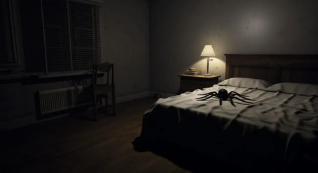

Description
More known as "The Singer Girl's Playtime", level is the th level of the Backrooms and split into halls and rooms of what looks to be old suburban houses of many diferent parts of the Frontrooms. "many diferent parts" both in space and time. They tend to be wooden made and their light bulbs tend to be old and low quality, when there are light bulbs in those old halls and rooms, wich are more comunly light up only by fire, might it be candles, fireplaces, chandleers. The type of room that most comunly has light bulbs is the bathrooms and the one that least comunly does is the bedrooms, last ones more comunly having not even fire and being light up only by their windows. All windows in this labirinth look out for an exterior at night time, with a full moon and many stars being visible, but some of them are citys, some of them are suburbs, some of them are medieval looking little villages and some are even fields with no human sign, wich is very strange becausa a window that looks out to a 2000s style city can be right next to one that does to a field, proving they are no wayly conected to eachother. This complex is very volutile, with no-clipble surfaces being very commun, but never taking out of the level. There are a few small rooms and crumped gaps only a no-cliper can get to, and even spaces that do not have any gap but the area where matter is unstable is big enough for a human to stay inside a bugy peace of matter, like a pool that does not get divers moist, but also does not allow them to breathe inside it.
The Singer Girl
The reason why this level is more known as "The Singer Girl's Playtime" is due to that refered as "me" by the dificulty title, a tiny little girl with brown hair running down her showder, wearing a short white dress with some black details and a black pants that covers her legs entirely, as well as boots that apear to be made out of thick leader and make a strong steping noise on the old wooden planks. Her eyes are crimson colored, but they only shine when she looks into the full moon trugh a window. For the majority of the time, The Singer Girl will jump around the halls and rooms that compose this level like she fells very happy just by being alive, thus beating her thick leader boots against the old planks and dusted brick tiles, aways singing happly and cutely. Upon getting close to a window, she might stop to look into the full moon that is out there, smiling, like she found the astral body beautyfull. This entity stops being cute right after seeing a human, when bettle traits, like wings and peaces of outerskeleton, come out of her body, her crimson but kinda human eyes are engolphed by her face's skin and eight spider-like blood colored eyes spin inside-out, and two horn-like fangs grow out of her mouth. The Singer Girl does not apear to fell pain while transforming but does reliase a lound and scary bug-like sound, emediatly stoping her song and starting to chase the human. If The Singer Girl caches up to the person they are chasing, she jumps on their showders and hugs their neck, emediatly starting to bite their had with her horn-looking fangs until their dath. After killing a person, The Singer Girl sits down and eats them patiently, returning to her human form only when the meal is eaten, even if another human walks in front of her while she is eating.
Now, what kind of songs does The Singer Girl sing while she is in her human state? There is only a single one, wich is in portuguese, but is very short and she keeps reapeating its verses over and over again. It was a little song created by biology teachers to help their students remeber what the chagas desease does and how people get it, there is an anchor down below that takes to a recording of a group of students singing it, if you want to know what she says. The Singer Girl reapeats those verses cutely and calmly, so, her singing can be very calming and loveble, reason why she sorta acts like a siren to unwarned wanderes.
Entrances and Exits
- Finding a rare abandoned leaving room in a very stylish house and no-cliping inside it might bring you here
- Hauling along with wolf-children in a paradise might teleport you here
- Walking around sublevel 974.1 might teleport you here if you keep singing while doing it, but you need to sing calm and peacefully
Entrances
- Tearing up seven childish drawings showing The Singer Girl that can be found scattered around the level teleports to a forest themed level
- Knocking on tweny yellow doors found scattered around the level - doors here use to be unpainted wood or black - teleports to level 11
- Troughwing into walls nineteen plastic-made little airplanes found scattered around the level teleports to level -5
- If is found a room of wich the wallpaper reminds that of level 0, usually it is in a kichen when that happens, people who jump into it no-clip into the negative version of sad level
- Getting tirtin diferent knifes from kichens of this level and using each one of them to draw a pentagram on a diferent wall triggers teleportation to a random kichen themed level or kichen part of a bigger level
- If you have an actual mental breakdown, with simptoms enoughtly intense for it to be impossible for you to be pretending, The Singer Girl will aproach you kindly and cutely pet your hair while trying to sing your fear away. People who experience this scene aways pass out, but, upon recovering, see themselves in sublevel 6.1